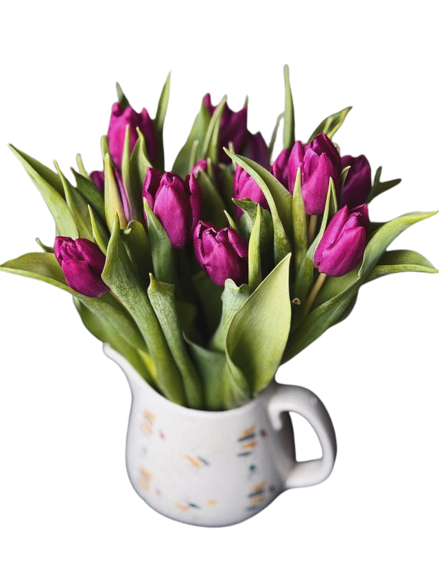
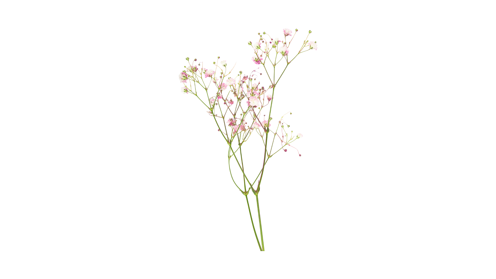
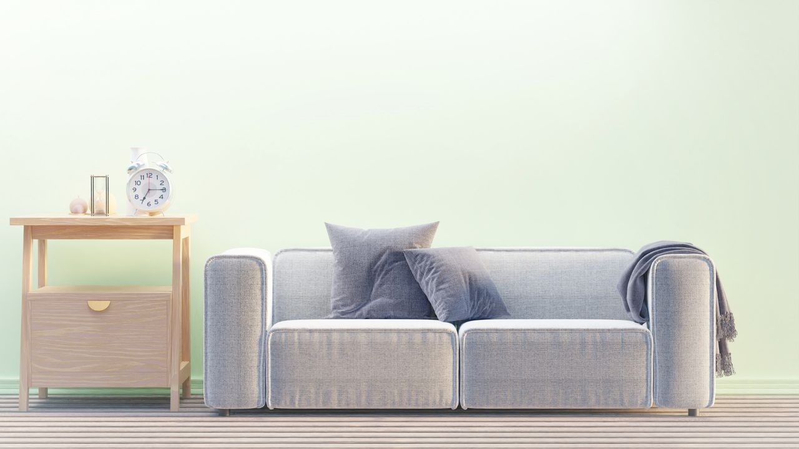

Online therapy in English & Spanish for women navigating trauma, anxiety, painful relationship patterns, life transitions, and emotional overwhelm.
Maybe you feel stuck in painful relationship patterns. Maybe anxiety, trauma, or emotional overwhelm leave you feeling disconnected from yourself.
Let's Talk

Compassionate virtual therapy for adults across Texas.
Navigating identity shifts, menopause, caregiving stress, empty nest transitions, emotional overwhelm, and rediscovering yourself.
Healing childhood wounds, relational trauma, attachment injuries, and experiences that continue to impact how you feel, connect, and move through life.
When your nervous system feels constantly "on," overthinking, stress, emotional exhaustion, and worry can become hard to carry alone.
Explore recurring cycles, trust, emotional disconnection, conflict, vulnerability, and the ways early experiences shape relationships today.
Culturally attuned therapy in English or Spanish for adults navigating relationships, trauma, identity, family expectations, and emotional wellbeing.
Support for men struggling with stress, emotional distance, identity shifts, burnout, relationships, or difficulty expressing emotions.
Sometimes weekly therapy doesn't feel like enough.
EMDR Intensives offer longer, focused sessions designed to help you move deeper into healing without stopping and starting week after week.
Available virtually across Texas in extended 3-5 hour sessions.
Learn About EMDR Intensives
I believe healing happens in relationships where you feel safe, understood, and genuinely supported.
I'm a bilingual therapist and EMDR-Certified clinician who helps adults heal trauma, anxiety, painful relationship patterns, and emotional overwhelm with warmth, depth, and practical tools for change.
My approach integrates EMDR, attachment-focused therapy, mindfulness, nervous system regulation, and emotionally focused work to help you better understand yourself, feel more grounded, and create healthier relationships.
Whether you're navigating trauma, anxiety, relationship struggles, or a major life transition, therapy can become a space where healing feels possible again.